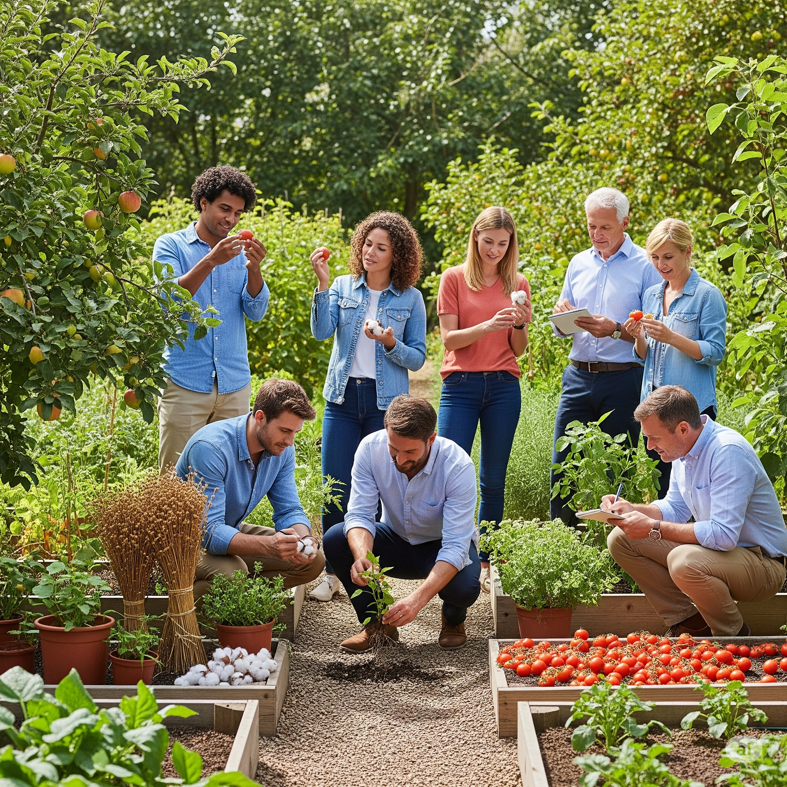
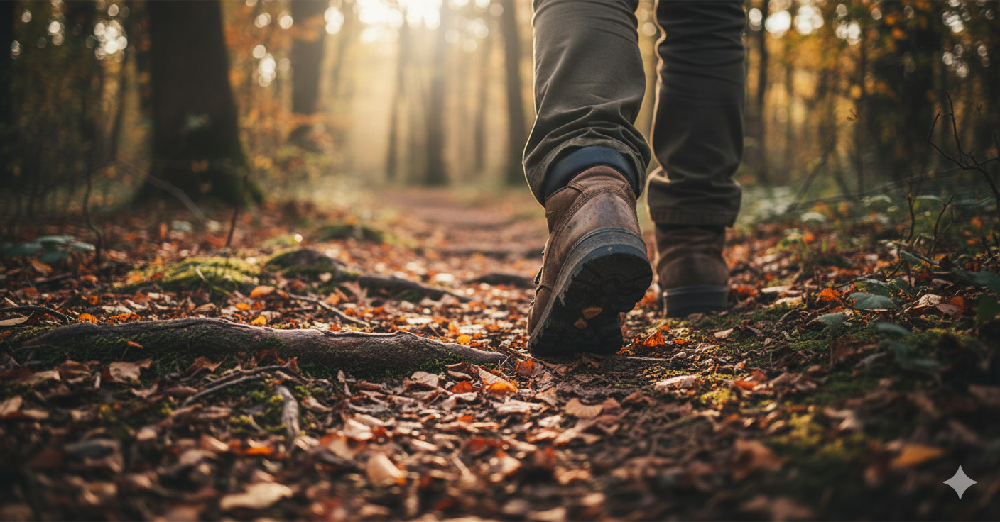
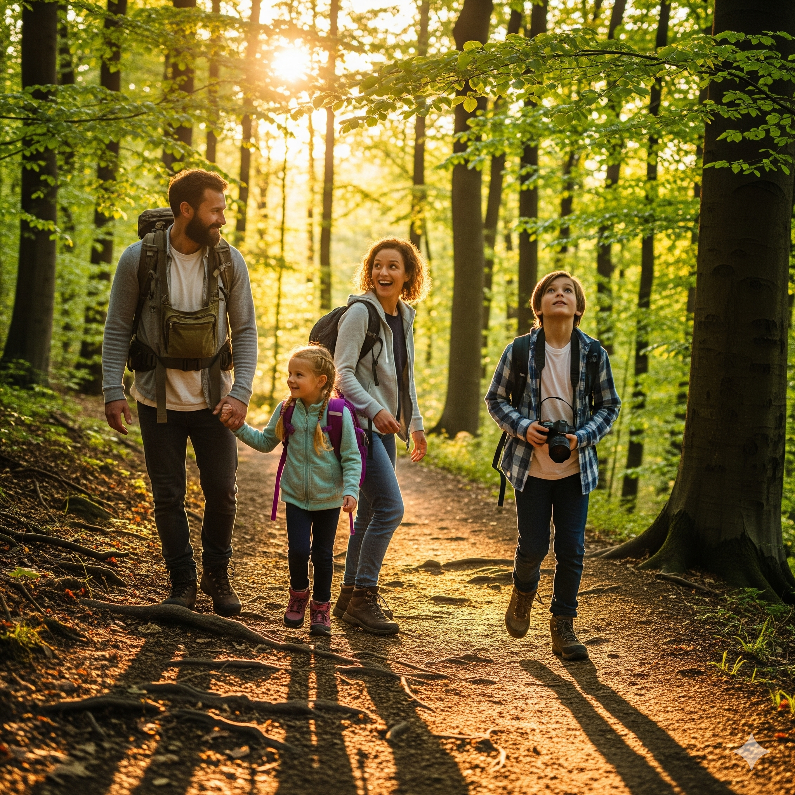

Takhle vypadá váš plán
Ukázka prvních dní z osobního 7denního plánu – konkrétní aktivity, popis přínosu a odkazy na ověřené zdroje.


Ukázka prvních dní z osobního 7denního plánu – konkrétní aktivity, popis přínosu a odkazy na ověřené zdroje.
5 minut s šálkem kávy a zápisníkem. Zapište si jen tři krátké věty – stačí drobnost, žádný velký zážitek.
Přínos: Pravidelné vědomé vnímání dobrých věcí snižuje úzkost a zlepšuje celkovou nálad i kvalitu spánku.
Tip lékaře/psychologa: Krátké večerní zapisování patří mezi nejlépe doložené techniky podpory duševní pohody – funguje i jen pár minut denně.
Vyrazte klidným tempem do okolí domu. Pohodlné boty, žádný spěch – jde o pravidelnost, ne výkon.
Přínos: Lehký pohyb venku zlepšuje prokrvení, podporuje zdravý spánek a snižuje riziko pádů díky lepší stabilitě.
Tip fyzioterapeuta: Začněte 10 minutami a každý týden přidejte o 2–3 minuty navíc. Tělo se přizpůsobí postupně a bez přetížení.
Krátký telefonát nebo videohovor s blízkým člověkem, kterého jste delší dobu neslyšeli.
Přínos: Udržování sociálních vazeb patří mezi nejsilnější faktory dlouhověkosti a duševní pohody po 60. roce života.
Tip psychologa: Nečekejte na "ten správný důvod" k zavolání – stačí prosté "jen jsem na tebe myslel/a".

Vyberte si recept se třemi až pěti surovinami, které máte rádi. Nemusí být složitý.
Přínos: Drobná změna v kuchyni přináší radost, pocit zvládnutí něčeho nového a podporuje chuť k jídlu.
Tip nutriční terapeutky: Zkuste recept s luštěninami nebo rybou – podporují svaly i energii bez náročné přípravy.

Stačí káva, společná hra nebo procházka – důležité je společně strávený čas, ne velká akce.
Přínos: Společné aktivity patří mezi nejsilnější zdroje radosti, sounáležitosti a pocitu smyslu.
Tip psychologa: Pravidelné menší společné rituály (např. nedělní kafe) fungují lépe než ojedinělé velké oslavy.

Najděte si 10 minut v klidu – zhodnotíte, jak se vám tento týden dařilo, a co vám udělalo nejvíc radosti.
Přínos: Krátká týdenní reflexe pomáhá udržet motivaci a vybrat si vhodný směr pro další týden.
Tip koučky: Nehodnoťte se přísně – stačí si všimnout jedné věci, která se podařila, a na ní postavit příští týden.